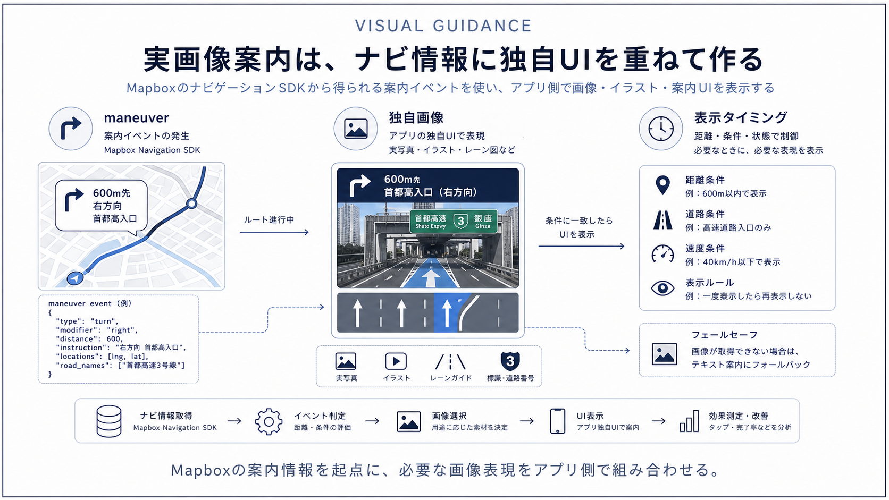
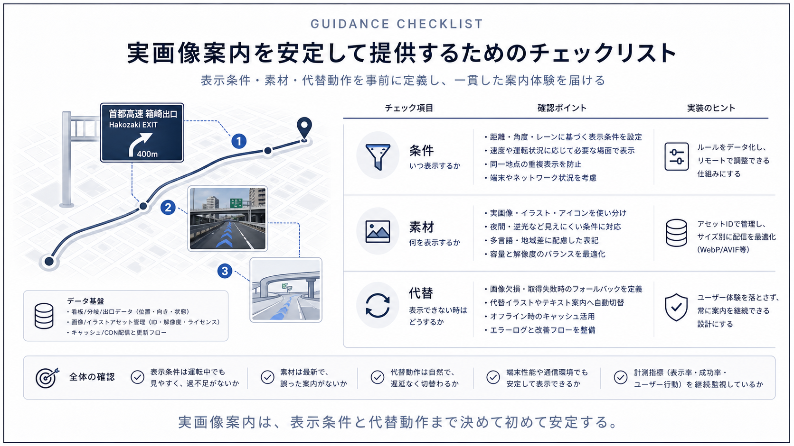

Question Note
Mapboxで実画像やイラスト付き案内を実装する方法

高速道路の出口、右左折、分岐などを実際の画像や独自イラストで案内したい場合、 Mapbox標準だけで自動的に写実画像が出ると考えないほうが安全です。公式ドキュメントで確認できる標準機能は、 主にmaneuver view、turn icon、lane guidance、road shield、voice instructionsです。 実画像や独自イラストまで出したいなら、Navigation SDKの進捗情報に応じて自前表示を重ねる実装になります。
標準で使える案内要素
- 次の曲がり方を示す maneuver icon
- 出口番号や道路名を示す primary / secondary maneuver
- lane guidance
- road shield
- voice instructions
まずは `MapboxManeuverView` を使うと、分岐案内、道路名、距離、レーン情報、シールド表示をかなり短時間で整えられます。 ここまでで足りるなら、独自画像資産を持たないほうが開発も運用も軽くなります。
実画像や独自イラストを出したいときの構成
本当に写真風のジャンクション画像やサービス独自の分岐イラストを出したいなら、 Navigation SDKから受け取る `RouteProgress` や `BannerInstructions` をトリガーにして、 アプリ側で対応画像を引き当てて表示します。
| 層 | 役割 | 実装内容 |
|---|---|---|
| Navigation SDK | 案内タイミング | 次の maneuver、距離、レーン、道路名を取得する |
| 画像判定ロジック | どの画像を出すか決める | 道路ID、出口番号、maneuver type などでマッピングする |
| 画像アセット | 表示素材 | 社内制作イラスト、実画像、CG画像などを管理する |
| UIレイヤー | 表示 | maneuver view の上または別パネルで出す |
現実的な設計判断
1. まずは標準UIで成立するか確認する
多くのケースでは、road shield、lane guidance、turn icon があれば運転案内として十分です。 写実画像は見栄えは上がりますが、画像整備、地域差分、分岐パターン管理が重くなります。
2. 画像は「完全自動生成」前提にしない
公式ドキュメントから確認できる範囲では、Navigation SDKは案内情報を返しますが、 高速道路出口の実景画像を自動で配信する標準機能までは読み取れません。 そのため、実画像ベースにしたいならアセット管理を自前で持つ設計が必要です。
3. 出し分けキーを早めに決める
画像を出し分けるには、出口番号、道路名、方面、分岐形状、地点IDなどをキーとして整備する必要があります。 これが曖昧だと、案内タイミングは正しくても画像選定が不安定になります。
実装の進め方
- Navigation SDK の標準 maneuver UI を先に動かす
- RouteProgress と BannerInstructions を監視する
- 特定の分岐パターンにだけ画像を出す PoC を作る
- 必要なら画像管理APIやローカルDBを用意する
要点
Mapbox標準で強いのは、曲がり方向、レーン、道路名、シールド、音声案内です。 実画像や独自イラストは、その上に自前ロジックで追加する領域です。 まず標準案内で運転品質を固めてから、差別化が必要な地点だけ画像化する進め方が実務的です。
